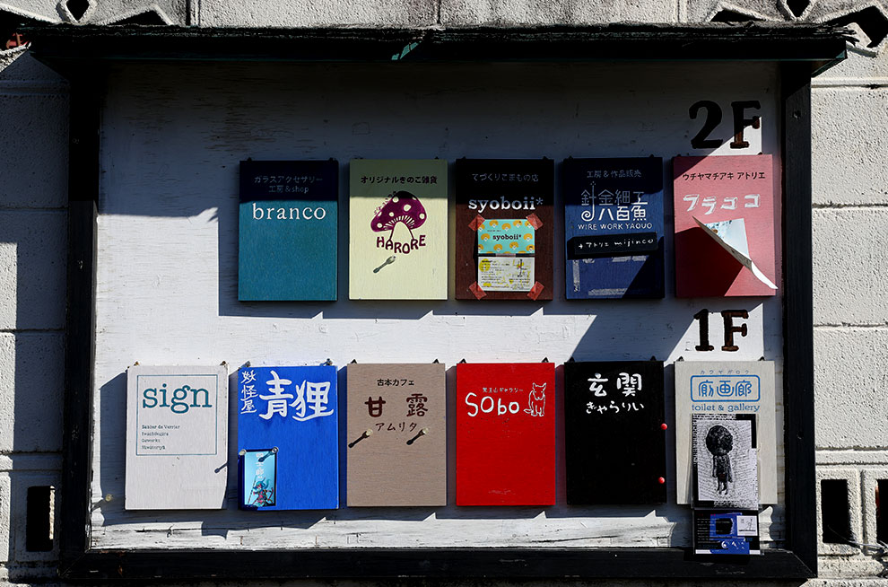

搭乘時間：2018/10/28-2019/03/30
| 航班號 | 航線 | 起飛時間 | 抵達時間 | 飛行日 |
| IT206 | 桃園－名古屋 | 08:45 | 12:25 | 每周一、二、三、五、六 |
| IT207 | 名古屋－桃園 | 13:15 | 15:50 | 每周一、二、三、五、六 |
| IT268 | 高雄－名古屋 | 13:30 | 17:25 | 每周三、六 |
| IT269 | 名古屋－高雄 | 18:15 | 21:10 | 每周三、六 |

巴士：
▪機場至名古屋車站：搭乘利木津巴士，車程約78分鐘，車資全票1,200日圓
| 新特麗亞 名古屋中部 國際機場 |
出發 Dep. |
8:15 | 9:15 | 10:15 | 11:15 | 12:15 | 13:15 | 14:15 | 15:15 | 16:15 | 17:15 | 18:15 | 19:15 | 20:15 | 21:15 | 22:15 |
| ↓ | ↓ | ↓ | ↓ | ↓ | ↓ | ↓ | ↓ | ↓ | ↓ | ↓ | ↓ | ↓ | ↓ | ↓ | ↓ | ↓ |
| 東急名古屋 大飯店 |
抵達 Arr. |
9:05 | 10:05 | 11:05 | 12:05 | 13:05 | 14:05 | 15:05 | 16:05 | 17:05 | 18:05 | 19:05 | 20:05 | 21:05 | 22:05 | 23:05 |
| 榮 | 9:10 | 10:10 | 11:10 | 12:10 | 13:10 | 14:10 | 15:10 | 16:10 | 17:10 | 18:10 | 19:10 | 20:10 | 21:10 | 22:10 | 23:10 | |
| 錦通本町 | 9:13 | 10:13 | 11:13 | 12:13 | 13:13 | 14:13 | 15:13 | 16:13 | 17:13 | 18:13 | 19:13 | 20:13 | 21:13 | 22:13 | 23:13 | |
| 名古屋 觀光大飯店 |
9:16 | 10:16 | 11:16 | 12:16 | 13:16 | 14:16 | 15:16 | 16:16 | 17:16 | 18:16 | 19:16 | 20:16 | 21:16 | 22:16 | 23:16 | |
| 名古屋 希爾頓酒店 |
9:23 | 10:23 | 11:23 | 12:23 | 13:23 | 14:23 | 15:23 | 16:23 | 17:23 | 18:23 | 19:23 | 20:23 | 21:23 | 22:23 | 23:23 | |
| 伏見町 | 9:26 | 10:26 | 11:26 | 12:26 | 13:26 | 14:26 | 15:26 | 16:26 | 17:26 | 18:26 | 19:26 | 20:26 | 21:26 | 22:26 | 23:26 | |
| 名古屋車站 (名鐵巴士中心) |
9:33 | 10:33 | 11:33 | 12:33 | 13:33 | 14:33 | 15:33 | 16:33 | 17:33 | 18:33 | 19:33 | 20:33 | 21:33 | 22:33 | 23:33 |
電車：
▪機場至名古屋站：搭乘名鐵電車，車程約23分鐘，車資全票1,230日圓


名花之里
連續三年榮獲日本燈飾排名第一的名花之里，每年冬季春季有日本規模最大的燈祭，超級壯觀
東山動物園
擁有史上最帥大猩猩夏巴尼，除了動物園還有遊樂設施區，更有從白川鄉移建合掌村到園區，值得一往

覺王山老街
票選為最喜愛的名古屋步行街第三名，閑散幽靜；覺王山公寓是人氣文創景點，手作小物讓人愛不釋手

鰻魚三吃
名古屋的鎮市之寶，無論是單吃、搭配蔥花芥末或以茶泡飯形式吃，每種吃法都是令人傾倒的絕殺美味
味噌烏龍麵
名古屋人氣地方料理，以當地名物「赤味噌」入湯，搭配具有咬勁的手打麵，是冬季的最佳美食選擇
手羽先
下酒菜的絕品，超級美味的酥炸雞翅，以胡椒簡單調味就非常好吃，或是淋上特製醬汁，同樣吮指回味